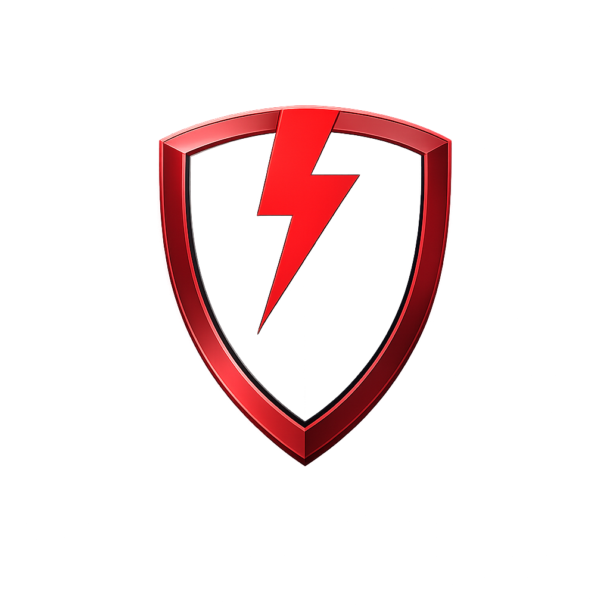

Iron Monitor
Select Radio Station:
כאן מורשת (Silent)
רדיו קול חי
רדיו קול ברמה
רדיו עכשיו 14
Activate Shabbat Mode
Open Weekday Dashboard
Check Shower Status
EXIT
REFRESH PAGE
NEXT VIEW
HAVDALAH (JER):
...
AUTO-REFRESH:
03:00:00